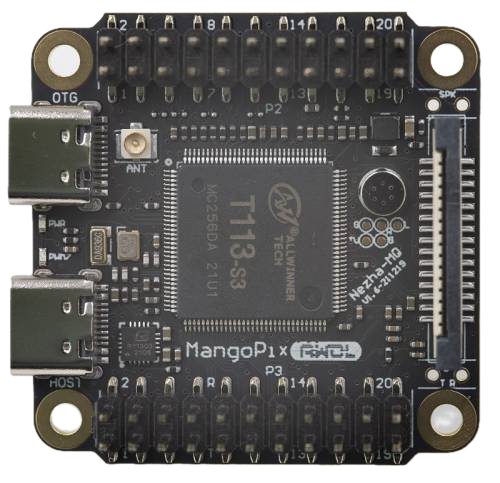

Here we discuss getting the MangoPI MQ Dual to boot to a prompt in 1.5 seconds
Because of the 'small' nature of this CPU, it lends itself to more deeply embedded projects.
However, when used in this manner the relatively 'heavy' nature of Linux can become an
issue, as it has impacts on build sizes, boot time etc...
In the instructions below we're building a completely open source system from a combination
of U-Boot, Linux kernel & Buildroot. This is all based on mainline upstream sources, which
gives a huge amount of assurance about on-going support and the quality of development. The
configuration of these pieces has been adjusted to minimise size (and functionality to some
degree as a consequence) to demonstrate a plausible minimal Linux system as a starting point
for building something. The focus is on boot speed.
There isn't anything particularly special about the image that is constructed here - the
fundamental C source code has not been change in any way. What we have done is tweak the
configurations in such a way to remove features we don't want, and adjust some default
values. Here are the main areas that have been adjusted:
Timed Boot Log
This boot log is obtained by monitoring the hardware serial port of the Mango Pi on P8. As
we need the Linux kernel to initialise the USB peripheral, we cannot get the full boot
console over the USB port. This bootlog is generated using
GrabSerial. The first two column shows
the absolute time from boot at which the line of text started. The second column shows the
delta from the previous line. All values are in floating point seconds.
[0.000001 0.000001]
[0.000109 0.000108] U-Boot SPL 2024.10-rc1 (Sep 16 2024 - 18:16:35 +1200)
[0.002037 0.001928] DRAM: 128 MiB
[0.005732 0.003695] Trying to boot from MMC1
[0.222219 0.216487]
[0.222385 0.000166]
[0.222420 0.000035] U-Boot 2024.10-rc1 (Sep 16 2024 - 18:16:35 +1200) Allwinner Technology
[0.224035 0.001615]
[0.224059 0.000024] CPU: Allwinner R528 (SUN8I)
[0.224525 0.000466] Model: MangoPi MQ-R-T113
[0.225036 0.000511] DRAM: 128 MiB
[0.252240 0.027204] Core: 42 devices, 17 uclasses, devicetree: separate
[0.252720 0.000480] WDT: Not starting watchdog@20500a0
[0.252971 0.000251] MMC: mmc@4020000: 0, mmc@4021000: 1
[0.259581 0.006610] Loading Environment from nowhere... OK
[0.260032 0.000451] In: serial@2500c00
[0.260178 0.000146] Out: serial@2500c00
[0.260320 0.000142] Err: serial@2500c00
[0.261980 0.001660] Net: No ethernet found.
[0.263637 0.001657] Hit any key to stop autoboot: 0
[0.886433 0.622796] 3590815 bytes read in 597 ms (5.7 MiB/s)
[0.889520 0.003087] ## Loading kernel from FIT Image at 45000000 ...
[0.890401 0.000881] Uconfig' configuration
[0.890712 0.000311] Tryingkernel' kernel subimage
[0.891102 0.000390] Deiption: Linux kernel
[0.891438 0.000336] Type: Kernel Image
[0.891814 0.000376] Compression: uncompressed
[0.892179 0.000365] Data Start: 0x450000c8
[0.892519 0.000340] Data Size: 2943280 Bytes = 2.8 MiB
[0.893022 0.000503] Architecture: ARM
[0.893295 0.000273] OS: Linux
[0.893588 0.000293] Load Address: 0x42000000
[0.893951 0.000363] Entry Point: 0x42000000
[0.894294 0.000343] Verifying Hash Integrity ... OK
[0.894688 0.000394] ## Loading ramdisk from FIT Image at 45000000 ...
[0.895223 0.000535] Using 'config' configuration
[0.895569 0.000346] Trying 'ramdisk' ramdisk subimage
[0.895963 0.000394] Description: buildroot
[0.896223 0.000260] Type: RAMDisk Image
[0.896538 0.000315] Compression: uncompressed
[0.896825 0.000287] Data Start: 0x452d3094
[0.897099 0.000274] Data Size: 627902 Bytes = 613.2 KiB
[0.897493 0.000394] Architecture: ARM
[0.897701 0.000208] OS: Linux
[0.897928 0.000227] Load Address: unavailable
[0.898205 0.000277] Entry Point: unavailable
[0.898487 0.000282] Verifying Hash Integrity ... OK
[0.898811 0.000324] ## Loading fdt from FIT Image at 45000000 ...
[0.899220 0.000409] Using 'config' configuration
[0.899508 0.000288] Trying 'fdt' fdt subimage
[0.899780 0.000272] Description: Flattened Device Tree blob
[0.900200 0.000420] Type: Flat Device Tree
[0.900498 0.000298] Compression: uncompressed
[0.900763 0.000265] Data Start: 0x452ceaa4
[0.901010 0.000247] Data Size: 17794 Bytes = 17.4 KiB
[0.901358 0.000348] Architecture: ARM
[0.901552 0.000194] Verifying Hash Integrity ... OK
[0.901839 0.000287] Booting using the fdt blob at 0x452ceaa4
[0.902165 0.000326] Working FDT set to 452ceaa4
[0.902364 0.000199] Loading Kernel Image to 42000000
[0.902619 0.000255] Loading Ramdisk to 46caf000, end 46d484be ... OK
[0.902984 0.000365] Loading Device Tree to 46ca7000, end 46cae581 ... OK
[0.903381 0.000397] Working FDT set to 46ca7000
[0.908823 0.005442]
[0.908846 0.000023] Starting kernel ...
[0.909025 0.000179]
[1.217288 0.308263] [ 0.000000] Booting Linux on physical CPU 0x0
[1.239634 0.022346] [ 0.000000] Linux version 6.10.9 (andre@kaka) (arm-linux-gcc.br_real (Buildroot 2021.11-12449-g1bef613319) 13.3.0, GNU ld (GNU Binutils) 2.41) #1 SMP Mon Sep 16 18:17:08 NZST 2024
[1.241559 0.001925] [ 0.000000] CPU: ARMv7 Processor [410fc075] revision 5 (ARMv7), cr=50c5387d
[1.242374 0.000815] [ 0.000000] CPU: div instructions available: patching division code
[1.243108 0.000734] [ 0.000000] CPU: PIPT / VIPT nonaliasing data cache, VIPT aliasing instruction cache
[1.244016 0.000908] [ 0.000000] OF: fdt: Machine model: MangoPi MQ-R-T113 (Custom Mini Config)
[1.244810 0.000794] [ 0.000000] Memory policy: Data cache writealloc
[1.245303 0.000493] [ 0.000000] Zone ranges:
[1.245541 0.000238] [ 0.000000] Normal [mem 0x0000000040000000-0x0000000047ffffff]
[1.246127 0.000586] [ 0.000000] HighMem empty
[1.246400 0.000273] [ 0.000000] Movable zone start for each node
[1.246802 0.000402] [ 0.000000] Early memory node ranges
[1.247139 0.000337] [ 0.000000] node 0: [mem 0x0000000040000000-0x0000000047ffffff]
[1.247731 0.000592] [ 0.000000] Initmem setup node 0 [mem 0x0000000040000000-0x0000000047ffffff]
[1.248394 0.000663] [ 0.000000] psci: probing for conduit method from DT.
[1.248882 0.000488] [ 0.000000] psci: Using PSCI v0.1 Function IDs from DT
[1.249365 0.000483] [ 0.000000] percpu: Embedded 10 pages/cpu s19092 r0 d21868 u40960
[1.249956 0.000591] [ 0.000000] Kernel command line:
[1.250279 0.000323] [ 0.000000] Dentry cache hash table entries: 16384 (order: 4, 65536 bytes, linear)
[1.251021 0.000742] [ 0.000000] Inode-cache hash table entries: 8192 (order: 3, 32768 bytes, linear)
[1.251644 0.000623] [ 0.000000] Built 1 zonelists, mobility grouping on. Total pages: 32768
[1.252202 0.000558] [ 0.000000] mem auto-init: stack:all(zero), heap alloc:off, heap free:off
[1.252772 0.000570] [ 0.000000] Memory: 120896K/131072K available (4096K kernel code, 811K rwdata, 872K rodata, 1024K init, 250K bss, 10176K reserved, 0K cma-reserved, 0K highmem)
[1.254043 0.001271] [ 0.000000] SLUB: HWalign=64, Order=0-3, MinObjects=0, CPUs=2, Nodes=1
[1.254559 0.000516] [ 0.000000] rcu: Hierarchical RCU implementation.
[1.254961 0.000402] [ 0.000000] rcu: RCU event tracing is enabled.
[1.255341 0.000380] [ 0.000000] rcu: RCU restricting CPUs from NR_CPUS=8 to nr_cpu_ids=2.
[1.255898 0.000557] [ 0.000000] rcu: RCU calculated value of scheduler-enlistment delay is 10 jiffies.
[1.256539 0.000641] [ 0.000000] rcu: Adjusting geometry for rcu_fanout_leaf=16, nr_cpu_ids=2
[1.257091 0.000552] [ 0.000000] NR_IRQS: 16, nr_irqs: 16, preallocated irqs: 16
[1.257503 0.000412] [ 0.000000] GIC: Using split EOI/Deactivate mode
[1.257843 0.000340] [ 0.000000] rcu: srcu_init: Setting srcu_struct sizes based on contention.
[1.258340 0.000497] [ 0.000000] clocksource: timer: mask: 0xffffffff max_cycles: 0xffffffff, max_idle_ns: 79635851949 ns
[1.258971 0.000631] [ 0.000000] arch_timer: cp15 timer(s) running at 24.00MHz (phys).
[1.259393 0.000422] [ 0.000000] clocksource: arch_sys_counter: mask: 0xffffffffffffff max_cycles: 0x588fe9dc0, max_idle_ns: 440795202592 ns
[1.260141 0.000748] [ 0.000001] sched_clock: 56 bits at 24MHz, resolution 41ns, wraps every 4398046511097ns
[1.260700 0.000559] [ 0.000016] Switching to timer-based delay loop, resolution 41ns
[1.261117 0.000417] [ 0.000243] Console: colour dummy device 80x30
[1.261426 0.000309] [ 0.000261] printk: legacy console [tty0] enabled
[1.261752 0.000326] [ 0.000752] Calibrating delay loop (skipped), value calculated using timer frequency.. 48.00 BogoMIPS (lpj=240000)
[1.262472 0.000720] [ 0.000789] CPU: Testing write buffer coherency: ok
[1.262809 0.000337] [ 0.000841] pid_max: default: 32768 minimum: 301
[1.263132 0.000323] [ 0.001012] Mount-cache hash table entries: 1024 (order: 0, 4096 bytes, linear)
[1.263638 0.000506] [ 0.001050] Mountpoint-cache hash table entries: 1024 (order: 0, 4096 bytes, linear)
[1.264258 0.000620] [ 0.001928] /cpus/cpu@0 missing clock-frequency property
[1.264632 0.000374] [ 0.001994] /cpus/cpu@1 missing clock-frequency property
[1.264993 0.000361] [ 0.002022] CPU0: thread -1, cpu 0, socket 0, mpidr 80000000
[1.265350 0.000357] [ 0.003110] Setting up static identity map for 0x40100000 - 0x40100054
[1.265780 0.000430] [ 0.003340] rcu: Hierarchical SRCU implementation.
[1.266081 0.000301] [ 0.003366] rcu: Max phase no-delay instances is 1000.
[1.266409 0.000328] [ 0.004136] smp: Bringing up secondary CPUs ...
[1.266689 0.000280] [ 0.004956] CPU1: thread -1, cpu 1, socket 0, mpidr 80000001
[1.267045 0.000356] [ 0.005114] smp: Brought up 1 node, 2 CPUs
[1.267296 0.000251] [ 0.005163] SMP: Total of 2 processors activated (96.00 BogoMIPS).
[1.267678 0.000382] [ 0.005186] CPU: All CPU(s) started in HYP mode.
[1.267961 0.000283] [ 0.005202] CPU: Virtualization extensions available.
[1.268272 0.000311] [ 0.006050] devtmpfs: initialized
[1.268477 0.000205] [ 0.010675] VFP support v0.3: implementor 41 architecture 2 part 30 variant 7 rev 5
[1.268954 0.000477] [ 0.010842] clocksource: jiffies: mask: 0xffffffff max_cycles: 0xffffffff, max_idle_ns: 19112604462750000 ns
[1.269560 0.000606] [ 0.010890] futex hash table entries: 512 (order: 3, 32768 bytes, linear)
[1.269976 0.000416] [ 0.011106] pinctrl core: initialized pinctrl subsystem
[1.270301 0.000325] [ 0.012571] NET: Registered PF_NETLINK/PF_ROUTE protocol family
[1.270733 0.000432] [ 0.012860] DMA: preallocated 256 KiB pool for atomic coherent allocations
[1.271186 0.000453] [ 0.013890] thermal_sys: Registered thermal governor 'step_wise'
[1.271580 0.000394] [ 0.014017] hw-breakpoint: found 5 (+1 reserved) breakpoint and 4 watchpoint registers.
[1.272102 0.000522] [ 0.014073] hw-breakpoint: maximum watchpoint size is 8 bytes.
[1.272485 0.000383] [ 0.01854] platform 2001000.clock-controller: Fixed dependency cycle(s) with /soc/rtc@7090000
[1.273017 0.000532] [ 0.021431] platform 5100000.mixer: Fixed dependency cycle(s) with /soc/tcon-top@5460000
[1.273487 0.000470] [ 0.021677] platform 5200000.mixer: Fixed dependency cycle(s) with /soc/tcon-top@5460000
[1.273973 0.000486] [ 0.022117] platform 5200000.mixer: Fixed dependency cycle(s) with /soc/tcon-top@5460000
[1.274482 0.000509] [ 0.022243] platform 5100000.mixer: Fixed dependency cycle(s) with /soc/tcon-top@5460000
[1.274958 0.000476] [ 0.022348] platform 5460000.tcon-top: Fixed dependency cycle(s) with /soc/mixer@5200000
[1.275433 0.000475] [ 0.022451] platform 5460000.tcon-top: Fixed dependency cycle(s) with /soc/lcd-controller@5470000
[1.275959 0.000526] [ 0.022494] platform 5460000.tcon-top: Fixed dependency cycle(s) with /soc/lcd-controller@5461000
[1.276613 0.000654] [ 0.022536] platform 5460000.tcon-top: Fixed dependency cycle(s) with /soc/mixer@5100000
[1.277297 0.000684] [ 0.022837] platform 5460000.tcon-top: Fixed dependency cycle(s) with /soc/lcd-controller@5461000
[1.278034 0.000737] [ 0.022959] platform 5461000.lcd-controller: Fixed dependency cycle(s) with /soc/tcon-top@5460000
[1.278800 0.000766] [ 0.023251] platform 5460000.tcon-top: Fixed dependency cycle(s) with /soc/lcd-controller@5470000
[1.279669 0.000869] [ 0.023375] platform 5470000.lcd-controller: Fixed dependency cycle(s) with /soc/tcon-top@5460000
[1.280347 0.000678] [ 0.023838] platform 7010000.clock-controller: Fixed dependency cycle(s) with /soc/clock-controller@2001000
[1.281213 0.000866] [ 0.023959] platform 7010000.clock-controller: Fixed dependency cycle(s) with /soc/rtc@7090000
[1.281916 0.000703] [ 0.024097] platform 7010000.clock-controller: Fixed dependency cycle(s) with /soc/rtc@7090000
[1.282584 0.000668] [ 0.024269] platform 2001000.clock-controller: Fixed dependency cycle(s) with /soc/rtc@7090000
[1.283419 0.000835] [ 0.024453] platform 7090000.rtc: Fixed dependency cycle(s) with /soc/clock-controller@7010000
[1.284153 0.000734] [ 0.029391] SCSI subsystem initialized
[1.284465 0.000312] [ 0.029896] usbcore: registered new interface driver usbfs
[1.284911 0.000446] [ 0.029958] usbcore: registered new interface driver hub
[1.285396 0.000485] [ 0.030090] usbcore: registered new device driver usb
[1.285850 0.000454] [ 0.030354] pps_core: LinuxPPS API ver. 1 registered
[1.286214 0.000364] [ 0.030377] pps_core: Software ver. 5.3.6 - Copyright 2005-2007 Rodolfo Giometti
[1.287091 0.000877] [ 0.030418] PTP clock support registered
[1.287357 0.000266] [ 0.031705] clocksource: Switched to clocksource arch_sys_counter
[1.287855 0.000498] [ 0.039936] NET: Registered PF_INET protocol family
[1.288308 0.000453] [ 0.040233] IP idents hash table entries: 2048 (order: 2, 16384 bytes, linear)
[1.288951 0.000643] [ 0.040927] tcp_listen_portaddr_hash hash table entries: 512 (order: 0, 4096 bytes, linear)
[1.289686 0.000735] [ 0.040984] Table-perturb hash table entries: 65536 (order: 6, 262144 bytes, linear)
[1.290264 0.000578] [ 0.041016] TCP established hash table entries: 1024 (order: 0, 4096 bytes, linear)
[1.290939 0.000675] [ 0.041055] TCP bind hash table entries: 1024 (order: 2, 16384 bytes, linear)
[1.291587 0.000648] [ 0.041107] TCP: Hash tables configured (established 1024 bind 1024)
[1.292096 0.000509] [ 0.041214] UDP hash table entries: 256 (order: 1, 8192 bytes, linear)
[1.292614 0.000518] [ 0.041267] UDP-Lite hash table entries: 256 (order: 1, 8192 bytes, linear)
[1.293274 0.000660] [ 0.041456] NET: Registered PF_UNIX/PF_LOCAL protocol family
[1.293762 0.000488] [ 0.042030] Unpacking initramfs...
[1.294030 0.000268] [ 0.051839] hw perfevents: enabled with armv7_cortex_a7 PMU driver, 5 counters available
[1.294757 0.000727] [ 0.053009] Initialise system trusted keyrings
[1.295175 0.000418] [ 0.053501] workingset: timestamp_bits=30 max_order=15 bucket_order=0
[1.295720 0.000545] [ 0.054217] Key type asymmetric registered
[1.296002 0.000282] [ 0.054281] Asymmetric key parser 'x509' registered
[1.296440 0.000438] [ 0.054401] Block layer SCSI generic (bsg) driver version 0.4 loaded (major 249)
[1.297121 0.000681] [ 0.054438] io scheduler mq-deadline registered
[1.297447 0.000326] [ 0.054459] io scheduler kyber registered
[1.297853 0.000406] [ 0.054500] io scheduler bfq registered
[1.298144 0.000291] [ 0.076957] Freeing initrd memory: 616K
[1.298552 0.000408] [ 0.118839] Serial: 8250/16550 driver, 8 ports, IRQ sharing disabled
[1.299061 0.000509] [ 0.142458] 2500c00.serial: ttyS3 at MMIO 0x2500c00 (irq = 33, base_baud = 1500000) is a 16550A
[1.299792 0.000731] [ 0.142567] printk: legacy console [ttyS3] enabled
[1.303051 0.003259] [ 0.210292] usbcore: registered new interface driver rtl8150
[1.303596 0.000545] [ 0.210854] usbcore: registered new device driver r8152-cfgselector
[1.304155 0.000559] [ 0.211443] usbcore: registered new interface driver r8152
[1.304749 0.000594] [ 0.212030] usbcore: registered new interface driver asix
[1.305242 0.000493] [ 0.212551] usbcore: registered new interface driver ax88179_178a
[1.305813 0.000571] [ 0.213126] usbcore: registered new interface driver cdc_ether
[1.306357 0.000544] [ 0.213677] usbcore: registered new interface driver cdc_subset
[1.306925 0.000568] [ 0.214270] usbcore: registered new interface driver cdc_ncm
[1.307463 0.000538] [ 0.214807] usbcore: registered new interface driver r8153_ecm
[1.308323 0.000860] [ 0.215678] usbcore: registered new interface driver cdc_acm
[1.308829 0.000506] [ 0.216196] cdc_acm: USB Abstract Control Model driver for USB modems and ISDN adapters
[1.309592 0.000763] [ 0.216937] usbcore: registered new interface driver usb-storage
[1.310183 0.000591] [ 0.217560] usbcore: registered new interface driver usbserial_generic
[1.310879 0.000696] [ 0.218169] usbserial: USB Serial support registered for generic
[1.311441 0.000562] [ 0.218741] usbcore: registered new interface driver ftdi_sio
[1.311990 0.000549] [ 0.219289] usbserial: USB Serial support registered for FTDI USB Serial Device
[1.312936 0.000946] [ 0.220310] UDC core: g_serial: couldn't find an available UDC
[1.315349 0.002413] [ 0.222591] sun6i-rtc 7090000.rtc: registered as rtc0
[1.315810 0.000461] [ 0.223170] sun6i-rtc 7090000.rtc: setting system clock to 1970-01-02T00:00:01 UTC (86401)
[1.317071 0.001261] [ 0.224431] i2c_dev: i2c /dev entries driver
[1.319077 0.002006] [ 0.226280] usbcore: registered new interface driver usbhid
[1.319501 0.000424] [ 0.226794] usbhid: USB HID core driver
[1.320720 0.001219] [ 0.228020] NET: Registered PF_PACKET protocol family
[1.321156 0.000436] [ 0.228506] Registering SWP/SWPB emulation handler
[1.327914 0.006758] [ 0.235154] Timer migration: 1 hierarchy levels; 8 children per group; 1 crossnode level
[1.328684 0.000770] [ 0.236057] Loading compiled-in X.509 certificates
[1.349891 0.021207] [ 0.256725] gpio gpiochip0: Static allocation of GPIO base is deprecated, use dynamic allocat
[1.358954 0.009063] [ 0.265907] sun20i-d1-pinctrl 2000000.pinctrl: initialized sunXi PIO driver
[1.359973 0.001019] [ 0.267276] usb_phy_generic usb_phy_generic.1.auto: dummy supplies not allowed for exclusive requests (id=vbus)
[1.361832 0.001859] [ 0.269082] g_serial gadget.0: Gadget Serial v2.4
[1.362160 0.000328] [ 0.269528] g_serial gadget.0: g_serial ready
[1.365326 0.003166] [ 0.272526] ehci-platform 4200000.usb: EHCI Host Controller
[1.365865 0.000539] [ 0.273076] ehci-platform 4200000.usb: new USB bus registered, assigned bus number 1
[1.366377 0.000512] [ 0.273092] ohci-platform 4200400.usb: Generic Platform OHCI controller
[1.367031 0.000654] [ 0.273874] ehci-platform 4200000.usb: irq 234, io mem 0x04200000
[1.367544 0.000513] [ 0.274335] ohci-platform 4200400.usb: new USB bus registered, assigned bus number 2
[1.368421 0.000877] [ 0.275693] ohci-platform 4200400.usb: irq 235, io mem 0x04200400
[1.371151 0.002730] [ 0.278409] clk: Disabling unused clocks
[1.371463 0.000312] [ 0.278470] sunxi-mmc 4020000.mmc: Got CD GPIO
[1.372491 0.001028] [ 0.279748] sunxi-mmc 4021000.mmc: allocated mmc-pwrseq
[1.397421 0.024930] [ 0.304312] sunxi-mmc 4021000.mmc: initialized, max. request size: 2048 KB, uses new timings mode
[1.397865 0.000444] [ 0.304607] sunxi-mmc 4020000.mmc: initialized, max. request size: 2048 KB, uses new timings mode
[1.404576 0.006711] [ 0.311738] ehci-platform 4200000.usb: USB 2.0 started, EHCI 1.00
[1.406036 0.001460] [ 0.313306] hub 1-0:1.0: USB hub found
[1.406307 0.000271] [ 0.313447] sunxi-mmc 4021000.mmc: card claims to support voltages below defined range
[1.407023 0.000716] [ 0.313692] hub 1-0:1.0: 1 port detected
[1.426942 0.019919] [ 0.334006] mmc1: new high speed SDIO card at address 0001
[1.439377 0.012435] [ 0.346479] hub 2-0:1.0: USB hub found
[1.439583 0.000206] [ 0.346879] hub 2-0:1.0: 1 port detected
[1.441366 0.001783] [ 0.348703] Freeing unused kernel image (initmem) memory: 1024K
[1.441997 0.000631] [ 0.349365] Run /init as init process
[1.452691 0.010694] [ 0.359790] mmc0: new high speed SDHC card at address 0001
[1.454077 0.001386] [ 0.361354] mmcblk0: mmc0:0001 SD32G 29.1 GiB
[1.459071 0.004994] [ 0.364304] mmcblk0: p1
[1.474032 0.014961] Saving 256 bits of non-creditable seed for next boot
[1.478966 0.004934] Starting syslogd: OK
[1.485280 0.006314] Starting klogd: OK
[1.493323 0.008043] Running sysctl: OK
[1.507947 0.014624] Starting network: OK
[1.525743 0.017796] Starting crond: OK
[1.630726 0.104983]
[1.630756 0.000030] Welcome to Buildroot
[1.630849 0.000093] buildroot login: